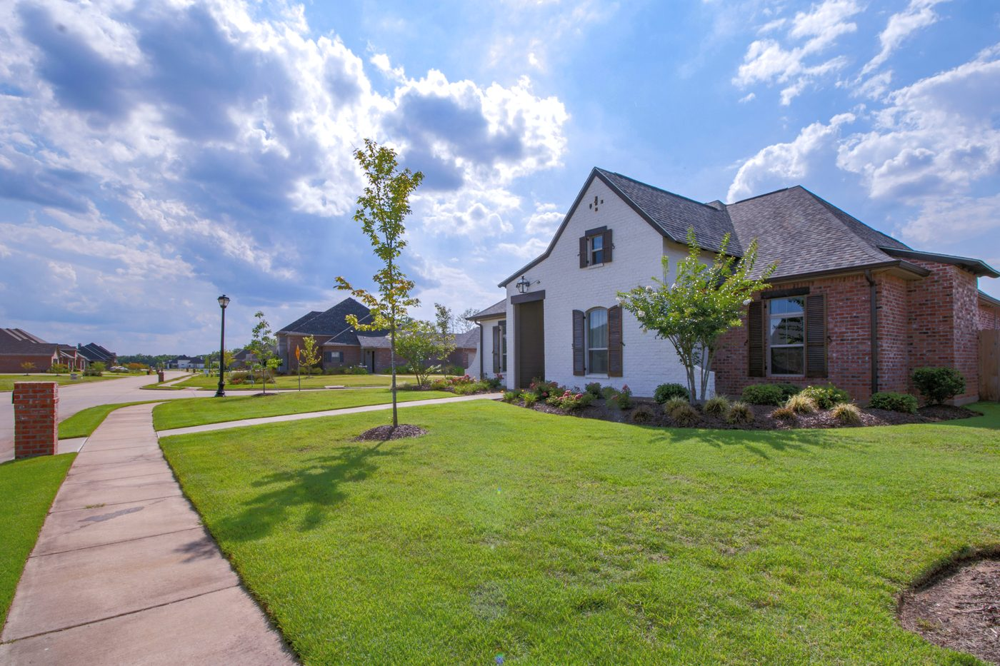

Ob Verkauf, Erbschaft, Scheidung oder einfach aus Interesse: Früher oder später stellt sich die Frage „Was ist meine Immobilie eigentlich wert?“. Gerade in einer gefragten Lage wie Bannewitz im Dresdner Umland kann der Unterschied zwischen Bauchgefühl und einer fundierten Bewertung schnell mehrere zehntausend Euro betragen. In diesem Ratgeber erfahren Sie, wie eine professionelle Immobilienbewertung abläuft, welche Faktoren den Wert bestimmen – und wie Sie Ihre kostenlose Wertermittlung erhalten.
Was ist eine Immobilienbewertung?
Eine Immobilienbewertung ist die systematische Ermittlung des aktuellen Marktwerts (Verkehrswerts) einer Immobilie – nicht auf Basis eines Bauchgefühls, sondern anhand anerkannter Verfahren, aktueller Vergleichsdaten und einer genauen Betrachtung des Objekts. Eine realistische Bewertung ist die Grundlage für jeden erfolgreichen Verkauf: Ein zu hoher Preis schreckt Käufer ab und führt zu langen Vermarktungszeiten, ein zu niedriger Preis verschenkt bares Geld.
Die drei anerkannten Bewertungsverfahren
Je nach Immobilientyp kommen in Deutschland drei Verfahren zum Einsatz:
- Vergleichswertverfahren – Der Wert wird aus tatsächlichen Verkaufspreisen vergleichbarer Objekte abgeleitet. Ideal für Eigentumswohnungen und Reihenhäuser.
- Sachwertverfahren – Maßgeblich sind Bodenwert und Herstellungskosten des Gebäudes. Üblich bei selbst genutzten Ein- und Zweifamilienhäusern.
- Ertragswertverfahren – Im Mittelpunkt stehen die erzielbaren Mieteinnahmen. Das Verfahren der Wahl für Mehrfamilienhäuser und Kapitalanlagen.
Welche Faktoren beeinflussen den Wert Ihrer Immobilie in Bannewitz?
- Lage & Ortsteil – Ob Possendorf, Goppeln, Rippien oder Bannewitz-Zentrum: Mikrolage, Anbindung an Dresden und Infrastruktur wirken sich deutlich aus.
- Grundstück – Größe, Zuschnitt, Ausrichtung und Bebaubarkeit.
- Baujahr & Zustand – Bausubstanz, Modernisierungsstand und anstehende Sanierungen.
- Wohn- und Nutzfläche – korrekt berechnet nach Wohnflächenverordnung.
- Energieausweis – energetischer Zustand und Heizungsart gewinnen stark an Bedeutung.
- Ausstattung – Bäder, Böden, Fenster und Außenanlagen.
- Aktuelle Marktlage – Angebot, Nachfrage und Zinsniveau zum Bewertungszeitpunkt.
Immobilienpreise in Bannewitz: gefragte Lage bei Dresden
Bannewitz zählt zum begehrten Dresdner Speckgürtel – die Nachfrage ist hoch, das Angebot begrenzt. Immobilien in Bannewitz erzielen entsprechend stabile bis steigende Preise. Wie sich das konkret auf Ihren Verkauf auswirkt, lesen Sie in unseren Tipps zum Immobilienverkauf in Bannewitz. Gerade in dieser angespannten Marktlage zahlen Käufer für Einfamilienhäuser häufig mehr, als es Sachwert- oder Vergleichswertverfahren rechnerisch hergeben – mehr dazu im Beitrag Warum der Marktwert mehr ist als eine Formel.
Online-Bewertung oder professionelle Vor-Ort-Bewertung?
Online-Rechner liefern in Sekunden eine grobe Spanne – auf Basis von Durchschnittswerten, ohne Ihr Objekt je gesehen zu haben. Für eine erste Orientierung ist das in Ordnung. Den tatsächlichen Wert bestimmt jedoch nur eine individuelle Bewertung vor Ort, die Zustand, Ausstattung und die Besonderheiten Ihrer Immobilie berücksichtigt. Genau hier setzen wir an.
So läuft Ihre kostenlose Immobilienbewertung ab
- Unverbindliche Kontaktaufnahme – telefonisch oder über das Kontaktformular.
- Vor-Ort-Termin – Wir besichtigen Ihre Immobilie und sichten gemeinsam die Unterlagen.
- Marktwertanalyse – Auswertung mit aktuellen Vergleichsdaten und dem passenden Bewertungsverfahren.
- Persönliche Wertermittlung – Sie erhalten eine nachvollziehbare Einschätzung und konkrete Handlungsempfehlungen.
Eine ehrliche Bewertung ist kein Verkaufsargument, sondern die Basis für Vertrauen. Wer den realistischen Wert seiner Immobilie kennt, trifft die richtigen Entscheidungen. – Janine Kreiser
Häufige Fragen zur Immobilienbewertung
Was kostet eine Immobilienbewertung?
Eine erste Markteinschätzung im Rahmen eines Verkaufsauftrags biete ich Ihnen kostenlos und unverbindlich an. Ein ausführliches, rechtssicheres Verkehrswertgutachten – etwa für Gericht oder Finanzamt – erstellen externe, öffentlich bestellte oder zertifizierte Sachverständige; das ist eine kostenpflichtige Leistung, die ich selbst nicht anbiete. Was alles in eine professionelle Maklerleistung einfließt, erkläre ich im Beitrag zur Maklerprovision.
Wie lange dauert die Bewertung?
Der Vor-Ort-Termin dauert meist 30 bis 60 Minuten. Die ausgearbeitete Einschätzung erhalten Sie in der Regel innerhalb weniger Tage.
Welche Unterlagen werden benötigt?
Hilfreich sind Grundriss, Wohnflächenberechnung, Grundbuchauszug, Energieausweis und – falls vorhanden – Nachweise zu Modernisierungen. Fehlt etwas, unterstütze ich Sie bei der Beschaffung.
Jetzt kostenlose Immobilienbewertung in Bannewitz anfragen
Sie möchten wissen, was Ihre Immobilie heute wert ist? Fordern Sie Ihre kostenlose, unverbindliche Wertermittlung an – persönlich, lokal und mit echter Marktkenntnis aus Bannewitz.
👉 Kostenlose Wertermittlung anfragen
📞 Jetzt kostenlose Bewertung anfragen: 0173 3719224
Ihre Janine Kreiser – Ihre Immobilienexpertin für Bannewitz und Umgebung.
Ihre Immobilie in Bannewitz – jetzt kostenlos bewerten lassen
Möchten Sie wissen, was Ihre Immobilie aktuell wert ist? Ich erstelle Ihnen eine kostenlose, unverbindliche Markteinschätzung – persönlich, lokal und mit echter Marktkenntnis aus Bannewitz.
Ihre Janine Kreiser – Ihre Immobilienexpertin für Bannewitz und Umgebung.